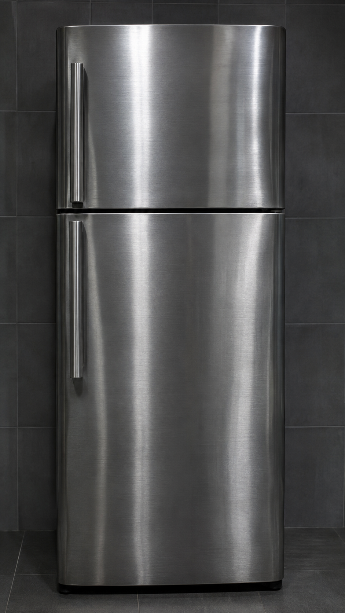
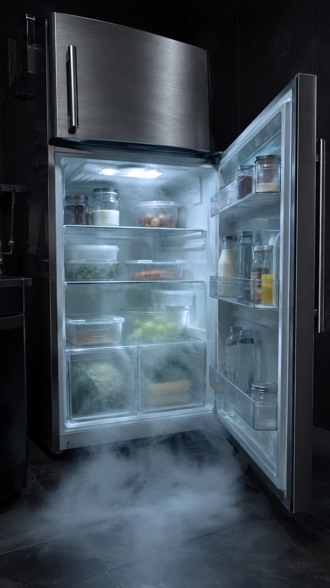
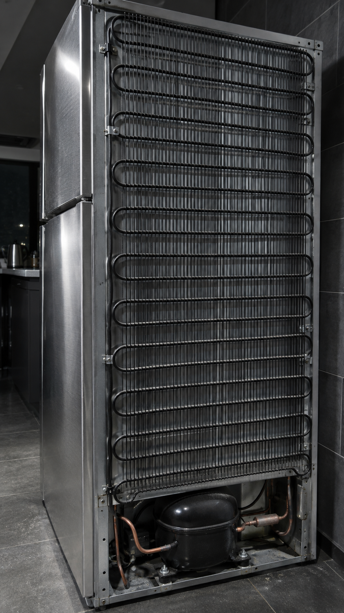

Enviar
Sua geladeira esquenta a sua cozinha.
O CALOR QUE SAI PELA GRADE
DENTRO + TOMADA
OPENSTAX · FÍSICA 2E · Qh = Qc + WPHYSICS VAN · UNIVERSITY OF ILLINOIS
HYPERPHYSICS · GEORGIA STATE UNIVERSITY
PNNL · DEPARTAMENTO DE ENERGIA DOS EUA
PHYSICS VAN · UNIVERSITY OF ILLINOIS